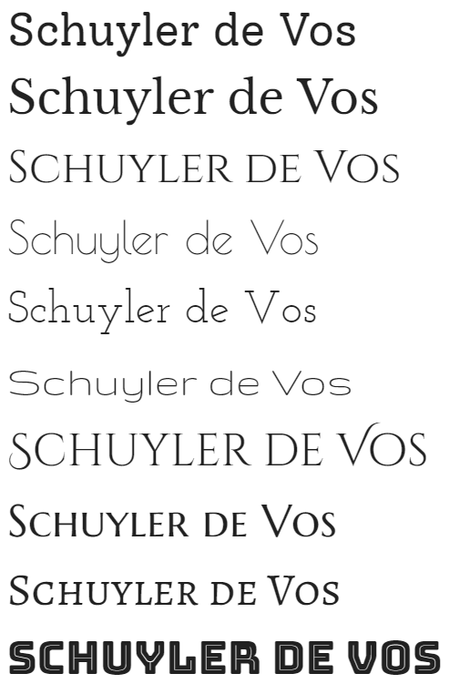
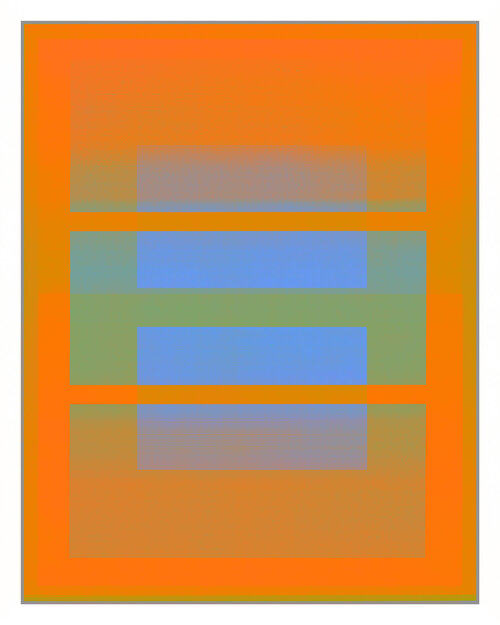
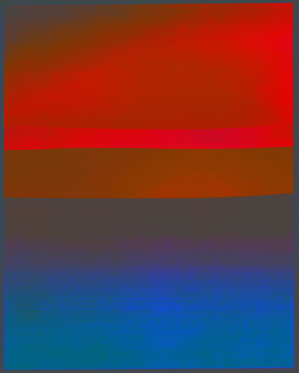
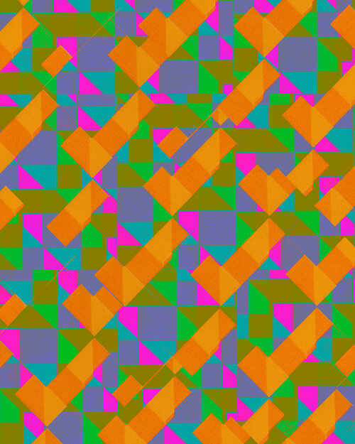
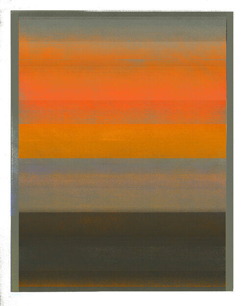
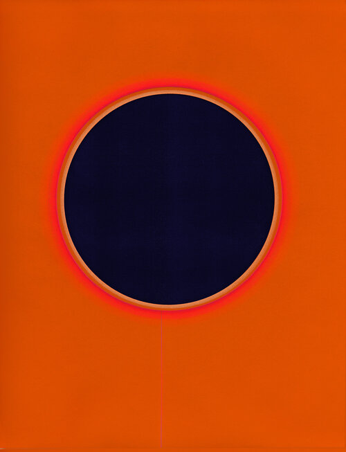
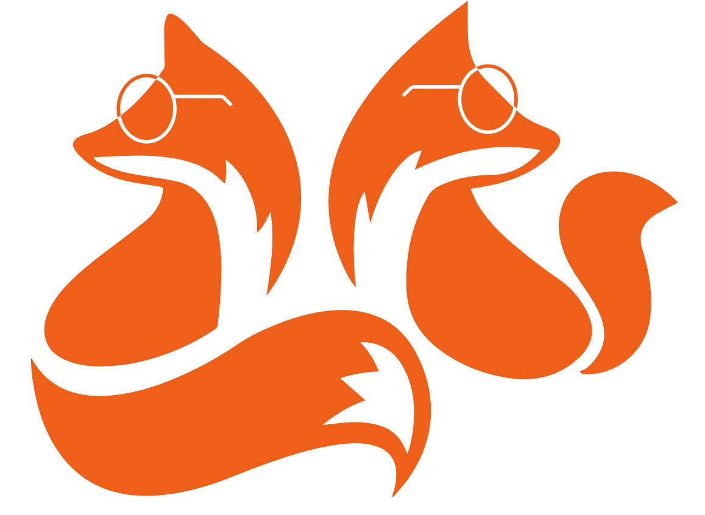
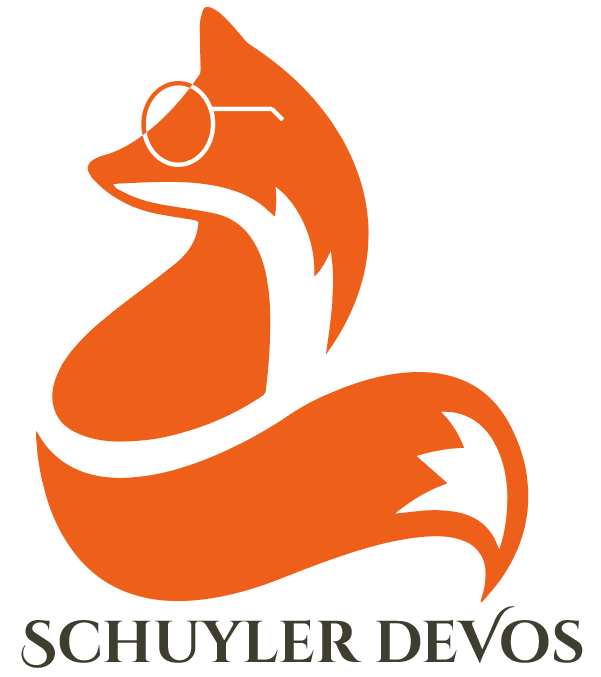

So, this week's assignment has to do with branding, and where I started was typography, since it's been consistently alluded to as the most important aspect of what we're learning. My first (and, really, only stop) was Google Fonts, but I was in luck here because we'd already done an exercise in class where we had to shop around for fonts for ourselves. I took those the ones I'd found there as a starting points and then spent my time browsing Google Fonts to try and see if there were any better combinations or interesting pairings.
I spent a few hours roaming around Google Fonts (it's more addicting than I would assume) and ultimately put together a list of fifteen contenders. Looking through them, I could tell there were a few commonalities.
The most noticeable of these is that, with only one outlier, most of the fonts I'd chosen are ones I'd consider thin. The fact of the matter is that my name is not the most elegant: it's spelled untintuitively (to English speakers, at least), it's long, it uses a bunch of weird letters in tandem, the capitals are strange, and the length is a bit off (not to mention the space between de and Vos, which I've alternately kept and dropped depending on my mood.)
I think my favorite, at least without a space between the de and Vos, is Cinzel Decorative, as seen here:
Schuyler deVos
What I like about it is the way that the S and V, as the capital letters in name, stand out. My name includes a lot of reading, relatively, so I feel like it's good to have those landmarks. Additionally, the font is based off of Roman lettering but also, with the flourishes, looks a bit more playful and mysterious to me. It reminds me of something I'd find while exploring old ruined temples in the middle of a magical forest, which is honestly exactly where I want to be.
However, it doesn't work as well for me when the de and Vos are separated. Personally I feel like that makes the whole thing harder, but here are two fonts I find acceptable when my name is rendered that way. The first is Poirest One, the second is Goudy Bookletter 1911.
Schuyler de Vos
Schuyler de Vos
For reference, here is everything I looked at together in a picture.

Not to be forgotten is the importance of finding fonts that pair well with your chosen font. For this, I honestly just followed the Google Fonts recommendation. I happen to think both Raleway and Open Sans look good with Cinzel Decorative. Then again, Open Sans looks good with a lot of things.
2: Palette
While one of our previous assignments required us to come up with a personal color palette, I wasn't sure I was quite satisfied with what I'd come up with. Though I like all the colors, I think that they tend to strain the eye a little bit, so I was also interested in coming up with alternatives.
In one of our classes, our classmates showcased some of the work by David Grey, a man who does something he calls "contemplative art". Here are a couple of his compositions (obviously nothing belongs to me).
    I think on the whole I like the palette of the fourth one better -- so here it is!

3: Logo
I was thinking a lot about what kind of thing I should have for my logo, but in the end the answer was pretty obvious. The fox is an animal that's very dear to my heart for a number of reasons. Orange is my favorite color, for one, and my last name means "the fox", so it's something that's close to my family. I also figure myself as someone who's a fox-like individual, so it all checks out.
I started out with vector image of a fox from Pinterest. Honestly, it looked so good in the beginning that I wasn't quite sure what to do with it... so I put glasses on it. I also recolored it to the orange from the palette I chose.
I was curious about the provenance of this image (and potential copyright infringement), so I looked into it a little. Apparently the image comes from pngtree, which is a website based in Shanghai which may or may not care about verification and free use. The moral here is that I wouldn't use these for commercial purposes, but for testing an idea I figure I'm safe. Plus, while I was there I found another cute fox vector image.
Here they are side by side, because I think they're cute.
And here it is with the text.
One more with the initials.
Comments? Questions? Concerns? Email me here!